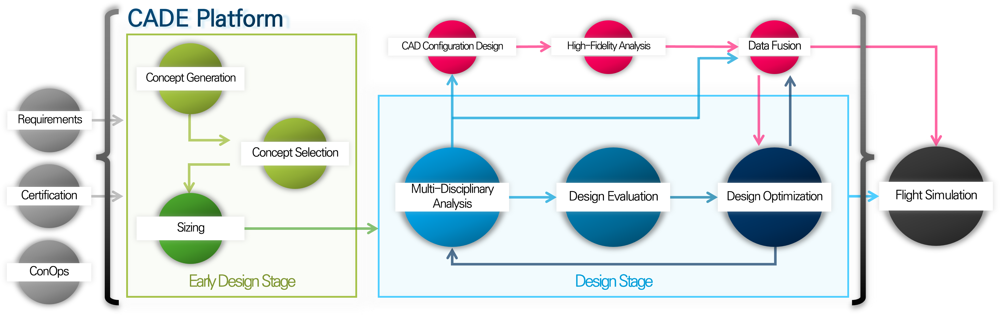

Comprehensive Aircraft Design Environment(CADE) User Guide
About the Software
CADE(Comprehensive Aircraft Design Environment) is an aircraft design environment(platform) developed by Konkuk Airworthiness and Design Institute(KADA) at Konkuk University. It provides a comprehensive design solutions necessary for aircraft development, covering the entire process from concept generation & selection to sizing, multi-disciplinary analysis(MDA), and multi-disciplinary design optimization(MDO).
CADE supports concept development to multi-disciplinary design optimization of various aerial vehicles. Check each solution’s features and capabilities in the below section.
Complete List of supported vehicles can be found in the Vehicles section.
KADA holds a large portfolio of available analysis methods that will be implemented in the CADE in the future releases.
The current version is CADE v1.0.0. For complete list of available tools check the Release History. To check the features of the older versions of the program check the Development History.
Look Inside CADE Platform
Software Development
Support
The development is led by Design and Analysis Team of KADA. Please contact us privately. Bug report system is under development.
git account for testers (email bugs)
list of data required